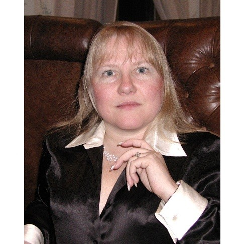

Keynote speaker: Dr. Kathleen M. Carley (Carnegie Mellon University)
Title: Social Cyber-Security Dynamics
Abstract:
Social Cyber-security is an emerging scientific area focused on the science to characterize, understand, and forecast cyber-mediated changes in human behavior, social, cultural and political outcomes, and to build the cyber-infrastructure needed for society to persist in its essential character in a cyber-mediated information environment under changing conditions, actual or imminent social cyber-threats. Social cyber-security is an inherently computational social science in which news methods and theories predicated on a deep understanding of social behavior and the methodology of graphs, simulation, and machine learning. The methods and theories being developed: a) take the socio-political context into account methodologically and empirically; b) are predicated on issues of influence, persuasion, manipulation, and theories that link human behavior to behavior in the cyber-mediated environment; and c) are focused on operational utility rather than just improving scores for machine learning algorithms or theory testing. In this presentation the basis of social cyber-security is presented, then key developments related to information operations in social media are used to illustrate the research challenges and operational goals in this area. Examples relate to the spread of disinformation, the use of bots in elections, and discrediting campaigns are presented. The need to move beyond detection and classification to dynamic operation is discussed, as is the limit of current classification systems in this area.
Bio:
Dr. Carley is a Professor of Computer Science in the Institute for Software Research, IEEE Fellow, and Director of the Center for Computational Analysis of Social and Organizational Systems at Carnegie Mellon University. She joined Carnegie Mellon in 1984 as Assistant Professor Sociology and Information Systems. In 1990 she became Associate Professor of Sociology and Organizations, in 1998 Professor of Sociology, Organizations, and Information Technology, and in 2002, attained her current role as Professor of Computation, Organization, and Society. She is also the CEO of Carley Technologies Inc. aka Netanomics. Dr. Carley’s research combines cognitive science, sociology, and computer science to address complex social and organizational issues. Her most notable research contribution was the establishment of Dynamic Network Analysis (DNA) – and the associated theory and methodology for examining large high-dimensional time variant networks. Her research on DNA has resulted in tools for analyzing large-scale dynamic networks and various multi-agent simulation systems. She has led the development of tools for extracting sentiment, social and semantic networks from social media and other textual data (AutoMap & NetMapper), simulating epidemiological models (BioWar), and simulating changes in beliefs and practice given information campaigns (Construct). Her ORA system is one of the premier network analysis and visualization technologies supporting geo-temporal analysis of social network and high-dimensional/meta-network data. It includes special features for handling small and big data, social media data, and network dynamics. It is used worldwide. Illustrative projects include assessment of fake news and social cyber-security threats, IRS outreach, impact of NextGen on airline re-rerouting, counter-terrorism modeling, counter-narcotics modeling, health analytics, and social media based assessment of crises such as Benghazi, Darfur, and the Arab Spring.